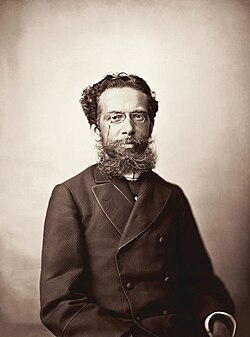

Quem é e por que me inspira

Machado de Assis é considerado o maior nome da literatura brasileira, autor de romances como Dom Casmurro, Memórias Póstumas de Brás Cubas e Quincas Borba. Foi também o fundador e primeiro presidente da Academia Brasileira de Letras. Nasceu no Rio de Janeiro em uma origem humilde, e mesmo sem seguir o caminho tradicional das elites da época, construiu uma das maiores carreiras literárias do país.
O que mais me chama atenção nele não é só o fato de ser um grande escritor, mas a forma como ele enxergava as pessoas. Para Machado, ninguém é simplesmente bom ou mau, honesto ou desonesto — as pessoas são cheias de contradições, e muitas vezes aquilo que alguém diz sentir (amor, generosidade, honestidade) está misturado com vaidade, orgulho ou interesse próprio. Em Dom Casmurro, por exemplo, a questão central nem é tanto se Capitu traiu ou não Bentinho, e sim como a mente dele interpreta os próprios acontecimentos — nem sempre enxergamos a realidade como ela é, e sim através das nossas emoções.
Essa forma de pensar me inspira a questionar as aparências antes de tirar conclusões — não aceitar a primeira resposta como sendo necessariamente a resposta completa e tentar entender o que existe por trás das atitudes das pessoas. É uma perspectiva que também reconheço nas histórias que mais me atraem em outras mídias, como Red Dead Redemption 2 e The Last of Us: narrativas que evitam dividir seus personagens de forma simples entre heróis e vilões e mostram o peso das escolhas que eles carregam. Em Red Dead Redemption 2, Arthur Morgan expressa uma ideia parecida ao dizer: “Talvez sejamos mais fantasmas do que pessoas.” A frase surge em uma reflexão sobre como o passado e tudo aquilo que vivemos continuam nos acompanhando — algo que também aparece nesses personagens, marcados pelas próprias escolhas e por contradições que não cabem em definições simples.
Machado de Assis me inspira não apenas por sua importância para a literatura, mas principalmente pela forma como enxergava as pessoas e o mundo. Admiro sua capacidade de questionar as aparências e perceber que, por trás das atitudes, muitas vezes existem sentimentos, interesses e contradições que não são imediatamente visíveis. Essa forma de pensar me inspira a ser mais observador, crítico e a não aceitar as coisas apenas como parecem ser.
Nas palavras dele
"Cada estação da vida é uma edição, que corrige a anterior, e que será corrigida também, até a edição definitiva, que o editor dá de graça aos vermes."
— Memórias Póstumas de Brás Cubas (1881)
"A vida é cheia de obrigações que a gente cumpre por mais vontade que tenha de as infringir deslavadamente."
— Dom Casmurro (1899)
Uma conexão russa
Essa mesma ideia — personagens sem final fácil, carregando o peso real das próprias escolhas — também aparece na literatura russa, principalmente em Fiódor Dostoiévski. Assim como Machado, ele criava personagens cheios de contradições, culpa e dúvida, sem respostas prontas. Embora tenham estilos e contextos muito diferentes, é justamente essa complexidade humana que aproxima, para mim, os dois autores e também as histórias que mais me atraem em outras mídias.